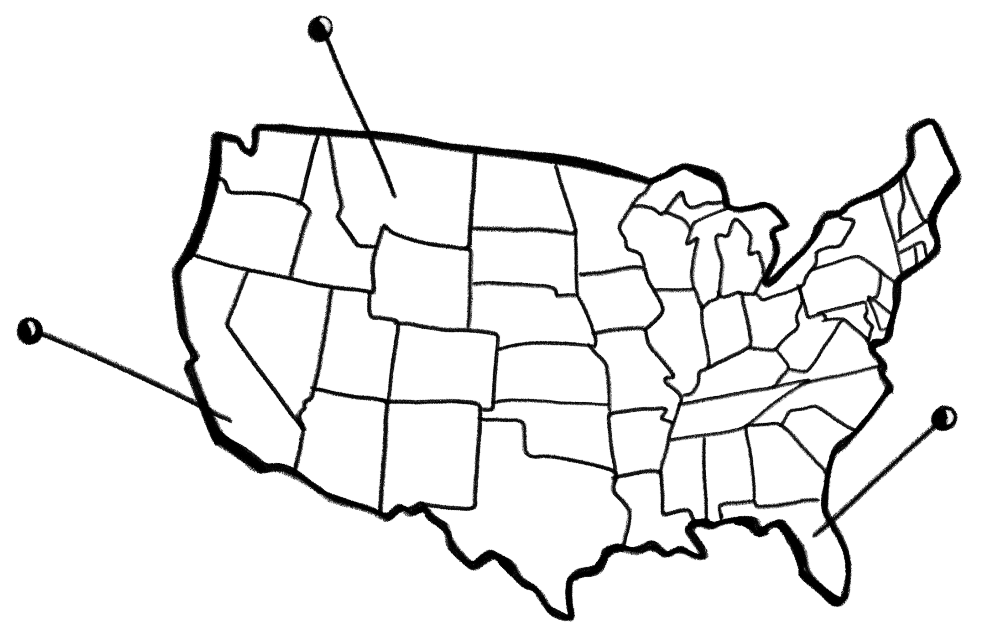
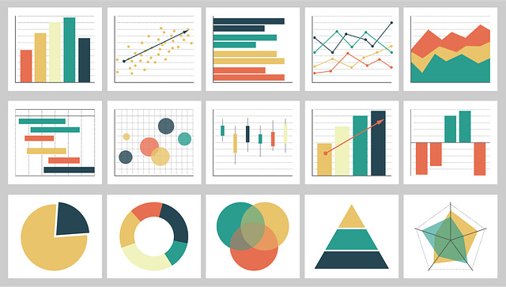
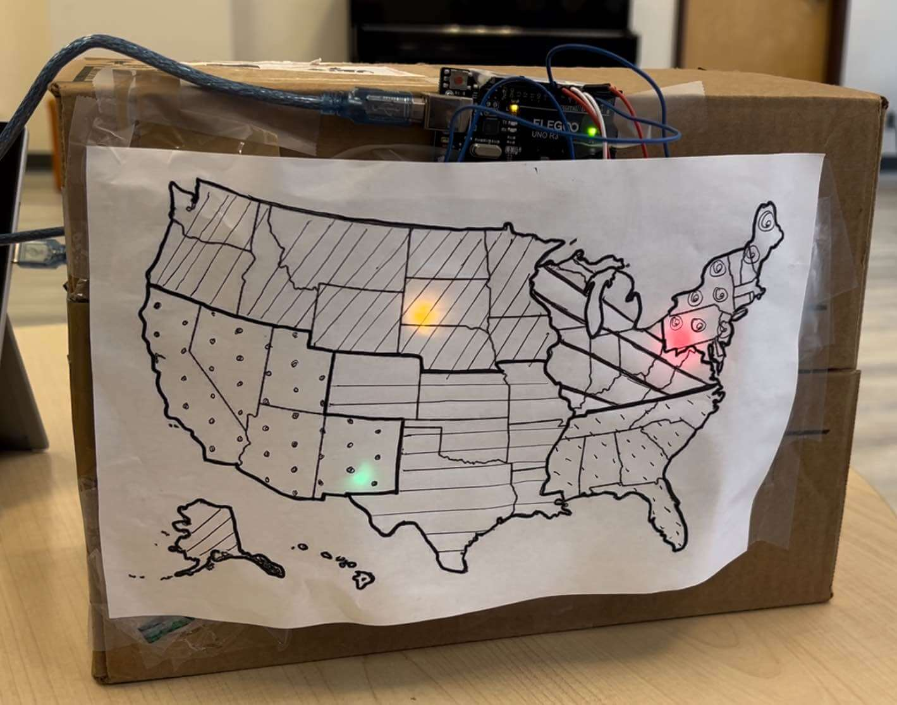
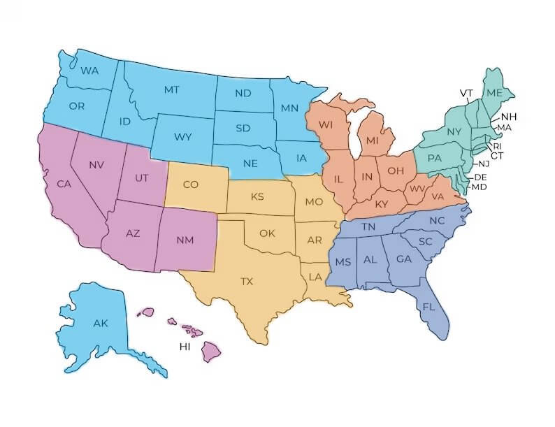
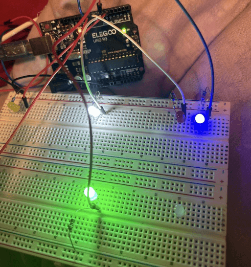
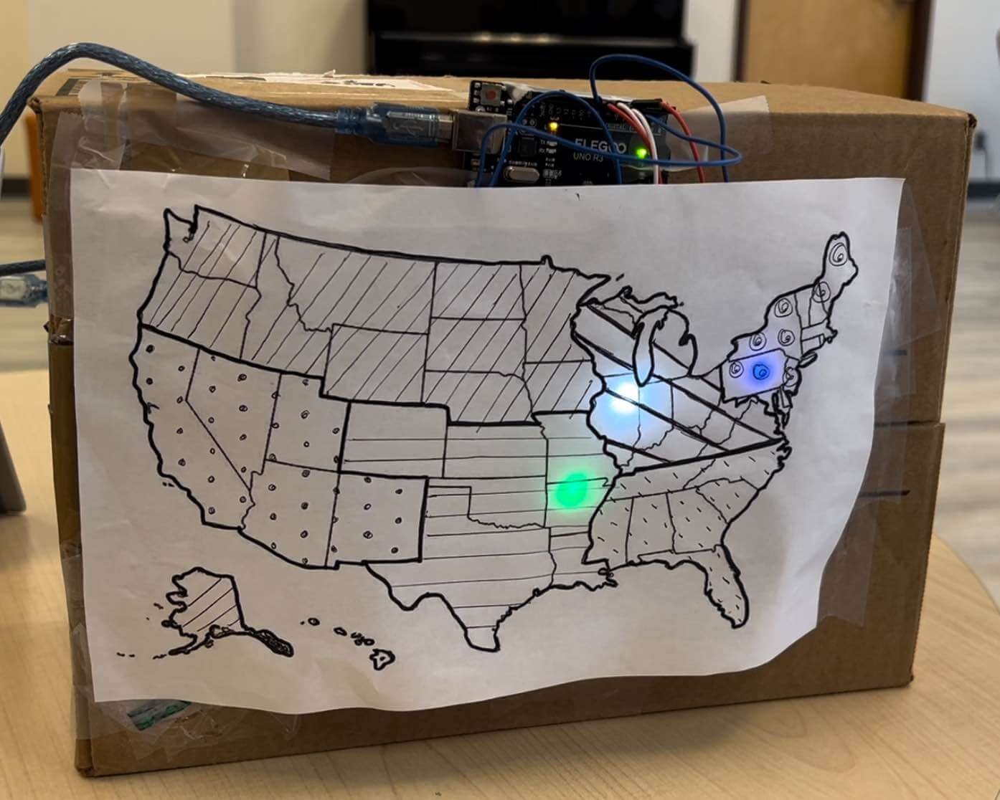
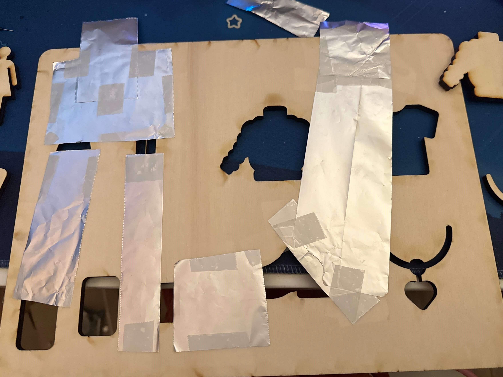

Data Physicalization: Marketing Helper
Overview
Targeted marketing is crucial for increasing a business’ profitability by focusing advertising on consumers most likely to purchase the item, thereby boosting ad-click rates and engagement. Research shows that relevant targeted ads encourage people to keep browsing and help make information more useful to consumers [1]. Traditionally, companies conduct research to identify their target audience and analyze the data using visualization tools like Excel, Tableau, and Power BI [2]. Managers use these visualizations to explore and solve business problems, such as identifying seasonal trends that could affect sales [3].
Motivated by the benefits of data physicalization, we aim to develop an alternative method for exploratory visualization. Data physicalization improves communication and collaboration in small groups, encouraging deeper discussions and broader perspectives compared to traditional visualization tools. This approach proves especially valuable in addressing broader challenges, encouraging a focus on exploration over narrowly defined answers [4].
Online advertising presents numerous targeting strategies, and small businesses often struggle to manage these strategies due to limited resources or lack of expertise. Additionally, these businesses need efficient data analysis to maximize their return on investments (ROI) and minimize errors. We want our Creativity Support Tool (CST) to use data physicalization to provide an intuitive and collaborative way for small businesses to explore their marketing data—allowing effective advertising decisions without extensive resources or specialized knowledge.
Aim & Purpose
The CST is designed to assist small business owners (in this instance, those in the fashion industry), make informed marketing and advertising decisions. By interacting with the tool, users can visualize where specific products are most popular based on demographic factors such as age, gender, and product preferences. This interactive approach is especially beneficial for those who lack the budget to test different audiences or wish to target niche markets. The visualization provides clear guidance on where to focus marketing effort to maximize sales.
Given that marketing budgets are often limited, choosing the wrong geographical areas for advertising or product placement can result in wasted resources [5]. Moreover, many small business owners and new entrepreneurs may not have extensive experience with data visualization tools. Our system offers these users an alternative, more intuitive way to explore data by transforming complex marketing information into a physical, tangible form.
The CST encompasses creativity-focused features. The interactivity of the system allows users to explore market areas in an open-ended manner, promoting creative thinking. This system also assists in everyday problem-solving and aids in innovative thinking in daily business operations. For our users, which are small fashion-based business owners, it aids in creatively exploring market data to guide their decisions.
The system positively influences users of varying expertise in different phases of the creative process. While especially beneficial to those unfamiliar with traditional data visualization tools, it is also valuable for those who are experienced. Research shows that humans may learn more effectively from tangible data representations [6], so users at all expertise levels can benefit from this tool.
This system supports multiple phases of the creative process [7]: Exploration, Ideation, and Evaluation.
-
Users freely experiment by inserting different combinations to discover data patterns: promoting creative thinking and hypothesis testing
-
Users generate ideas based on their interactions and the resulting visualizations
-
Users assess the effectiveness of their marketing ideas by interacting with the data and adjusting their strategies based on feedback from the CST
Design Decisions
- Arduino UNO kit
- Laser cut board
- Aluminium foil
- Cardboard + Paper
This CST was prototyped using:
The data is represented physically through a wooden board with cutout shapes for different categories (product type, age, gender), that are based on our dataset and can be used in queries. Each shape is tied to a data input, and when pieces are inserted into the board, the maps light up based on the inputted combination.
Physical cutouts were used to represent the user’s query as it engages users in a tactile way. There are several studies that show the benefit of tactile engagement when it comes to learning. Tactile interaction helps maintain attention to current tasks. One study found that participants who underwent tactile training experienced less mind wandering. This is important as the CST helps users find the best area to market a product, which may require several queries and comparisons. By incorporating tactile elements, it helps users stay focused and engaged throughout the process [8].
Research has shown using a Tangible User Interface (TUI) instead of a Graphical User Interface (GUI) during collaborative design helps with cognitive offload due to the hands-on approach of the system. Using a TUI also enhances conceptual thoughts and leads to deeper insights [9]. In traditional interactive GUIs (data visualization tools), users filter queries by clicking on different buttons representing various categories, however, this method may make it harder for users to conceptualize the full query. Our system makes it easier to do so by laying out physical objects for users to manipulate and view directly.
On the map, the brightness of the LED indicates the top regions for product popularity; the color of the LED represents the most popular color of the product(s) in that region. The map was designed to light up immediately after a query is made to provide instant visual feedback to the user. The immediate feedback reinforces the connection between the user’s input and the resulting data visualization—aiding in the user’s engagement and comprehension. Map-based visualizations are effective because they combine the abilities to interpret spatial patterns, as well as creativity, with computational data processing [10].Given the dataset constraints and the capabilities of the Arduino's, a choice to display both geographical data and item color with LEDs was made.
-
Popular item color
This nominal data type was coded using different LED hues, as nominal data is best represented by distinct values
-
In demand regions
This ordinal data type, is represented by varying the brightness levels of the LEDs; ordinal data is effectively shown using different saturation levels within a single color hue [11].
-
Region sectioning
We drew different arbitrary patterns on the regions of the map to help users differentiate the regions.To make things simpler to implement, the map was sectioned into 6 different sections. The map was first sectioned into north and south (the climates varies widely and affects types of items chosen), then into 6 sections based on population density (Arduino constraints only allowed for 6 sections).

Data Types:
Data-related queries of where to market products; using information from the tool:
Identifying regions where a specific product is popular among certain certain age groups or genders
Analyzing how different demographic groups influence the sales of a particular product across various regions
Discovering overall product popularity trends in specific regions without filtering by demographics
Prototype
The user starts off by thinking of a query, then inserting pieces into the wooden cutout board that correlate with the query. Each piece corresponds to a product type, age group, or gender.
- 4 categories (shoes, accessories, clothing, and outerwear)
- 3 age groups (the data only consist of people over the age of 18)
- 2 genders
There are a total of 9 pieces that have been laser cut out of a plank of wood:
When the pieces are placed into the board, a circuit is completed and the map lights up! The user then looks over at the map. Three regions on the map lights up based on the query that is completed by the user. A cardboard box was used to hold up the map and Arduino. The Arduino and breadboard are placed on top of the box and secured with tape.
The paper map is then placed and secured with tape on top of the flat side of the cardboard box. The colors and numbers of LEDs were chosen strategically to satisfy both component constraints and the LEDs needed for our designed scenarios.
Future Changes
Ideally, any query completed would trigger the map to light up, but due to the constraint of not having enough Arduino digital pins, the user has to choose between a set number of scenarios to query. There were three different scenarios made for users to try and see how this system works. The prototype was designed this way due to time and Arduino constraints. If the system were to be rebuilt to include every combination of possible scenarios (combinations of the cutout pieces), an alternative way to "complete the circuit" and light up the map would need to be used. With the constraints, the prototype used aluminum foil on the backs of the cutout shapes and the board to register and light up the LEDs when a query has been completed. Ideally the user would be able to come up with any scenario and insert pieces based on their ideas.
References
-
“Data Analysis and Visualization Techniques,” SCU, Dec. 12, 2023. https://onlinedegrees.scu.edu/media/blog/data-analysis-and-visualization-techniques
-
Y. Li, R. Wu, J. Liu, and S. Wang, “The Impact of Targeted Online Advertising’s Pushing Time on Consumers’ Browsing Intention,” Journal of Global Information Management, vol. 31, no. 1, pp. 1–17, Mar. 2023, doi: https://doi.org/10.4018/jgim.319713
-
S. Berinato, “Visualizations That Really Work,” Harvard Business Review, Jun. 2016. https://hbr.org/2016/06/visualizations-that-really-work
-
E. Niculescu and M. Forslund, “Data Visualization vs Data Physicalization for Group Collaboration,” DIVA, 2023. https://kth.diva-portal.org/smash/record
-
G. Iyer, D. Soberman, and J. M. Villas-Boas, “The Targeting of Advertising,” Marketing Science, vol. 24, no. 3, pp. 461–476, Aug. 2005, doi: https://doi.org/10.1287/mksc.1050.0117
-
Y. Jansen et al., “Opportunities and Challenges for Data Physicalization,” New York, NY, USA: ACM, 2015, pp. 3227–3236. doi: https://doi.org/10.1145/2702123.2702180
-
R. K. Sawyer, “The iterative and improvisational nature of the creative process,” Journal of Creativity, vol. 31, p. 100002, Oct. 2021, doi: https://doi.org/10.1016/j.yjoc.2021.100002
-
Y. Luo and J. Zhang, “The Effect of Tactile Training on Sustained Attention in Young Adults,” Brain Sciences, vol. 10, no. 10, p. 695, Oct. 2020, doi: https://doi.org/10.3390/brainsci10100695
-
M. J. Kim and M. L. Maher, “The impact of tangible user interfaces on spatial cognition during collaborative design,” Design Studies, vol. 29, no. 3, pp. 222–253, May 2008, doi: https://doi.org/10.1016/j.destud.2007.12.006
-
M. Nöllenburg, “Geographic Visualization,” Human-Centered Visualization Environments, pp. 257–294, 2006, doi: https://doi.org/10.1007/978-3-540-71949-6_6
-
S. Schlosser, “Visual Variables,” Pressbooks.pub, 2024. https://colorado.pressbooks.pub/makingmaps/chapter/chapter-4-visual-variables